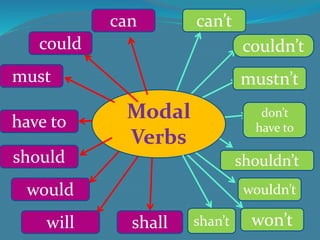

MODAL VERBS

DEFINICIÓN
Los verbos modales indican:
- Posibilidad
- Intención
- Capacidad
- Necesidad
Los verbos modales son un tipo de verbo auxiliar, de forma que se utilizan junto con el verbo principal de la oración. Entre los más comunes encontramos: can, should y must.